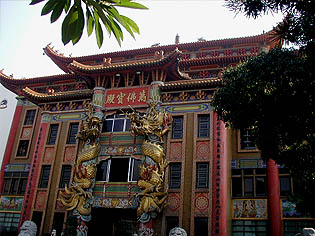
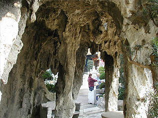
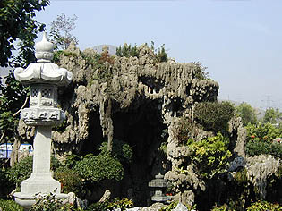
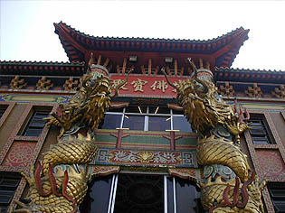
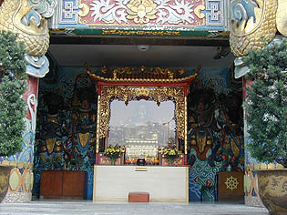
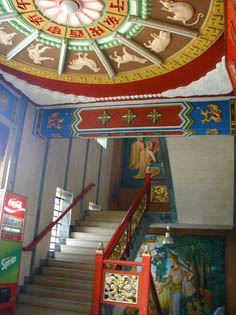
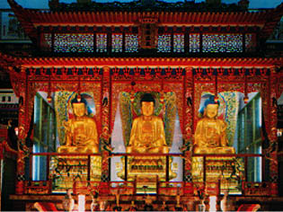
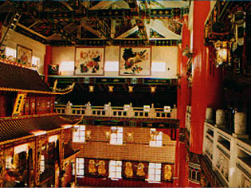
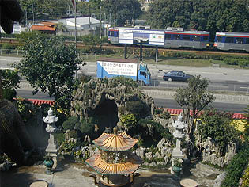
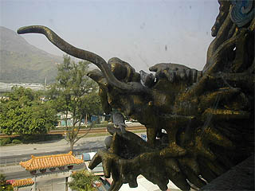

妙法寺／屯門 MuiFatMonastery
香港の九龍半島西部の街、屯門は軽便鉄道という二両連結の路面電車のようなものが街中を縦横に走る郊外のベットタウンである。
その屯門の中心部からいくらか離れたところにこの妙法寺はある。
目の前には幹線道路があり、トラックがガンガン飛ばしていて風情もへったくれもないロケーションである。
しかしそんな味気ない風景の中にあってもこの寺はひときわ異彩を放っている。

萬佛寳殿（本堂）である。
これが幹線道路を通るトラックなどを見据えるようにドドドーンと聳え立っている。
萬佛寳殿の前庭には人工グロッタがあって中に入ることができる。
 
もちろん散々洞窟探検（という程でもないが）を堪能した後、萬佛寳殿に向かう。

入口の柱には巨大な昇り龍が巻き付いていて、外壁にはタイルモザイクの仏画がたくさんあり、装飾過剰状態を引き起こしている。

で、入口。光がガラスに反射していて判りにくいが、弥勒菩薩である。
中国の弥勒様というのは布袋様のような姿でデブ専仏像マニアには人気のアイテムである。
「〜である」と言い切ってしまってからいうのも何だがデブ専仏像マニアなどというものが存在するかどうかは目下のところ鋭意調査中である。
さて、内部である。
入ると左右に階段があり、踊り場の壁面にはきっつ〜い画風のレリーフが。

内部は写真撮影が禁止なので階段付近しか撮りませんでした。
一階は信徒会館、二階は食堂的な雰囲気で三階が主殿である。
主殿の中央にはこれだけで街中の小さなお寺の本堂くらいはありそうな厨子に入った三尊像。
見上げるとこぼれ落ちて来そうな程のヘヴィーなビルマチック仏画天井にびっしりと描き込まれている。
そして梁という梁すべてにギッチリ装飾模様が描き込まれている。
建物の外観をさらに凌駕する濃いインテリアだった。もはや荘厳というレベルを通り越してゴテゴテとしか言い様のない装飾っぷりだ。
三階の主殿は吹き抜けになっていてその吹き抜けに面してコの字型の平面を持つ四階がある。蔵經閣（ま、経蔵ですな）というそうだ。
是非、行ってみたかったのだが主殿の厨子の裏手にある階段には四階に登るのは禁止的な貼紙があったので遠慮しときました。
あまり要領を得ない絵葉書ですけど一応載せときます。
 
あまりのゴテゴテ具合に感動しながら本尊さんの前で首が痛くなるまで天井を見上げていると、いつの間にか人がやってきた。
慌てて部屋の隅の方に移動したら、今度は坊さんが沢山やって来た。
あ、みんな尼さんだ、ってことはココ尼寺？！
どうやら法事のようなものが始まったらしい。
吹き抜けの高い天井に尼さんのお経が響き渡る。ありがたやありがたや。
 
外を眺めると目の前には柱に巻き付いた昇り龍の口に鳩がとまっている。グロッタの向こうには幹線道路その向こうには軽便鉄道が見える。
まさかこんな殺風景なところにこんな濃ゆい寺があるとは。
次へ行きましょう 香港珍寺遊戯に戻る 珍寺大道場に戻る